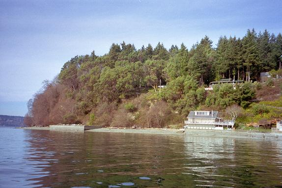
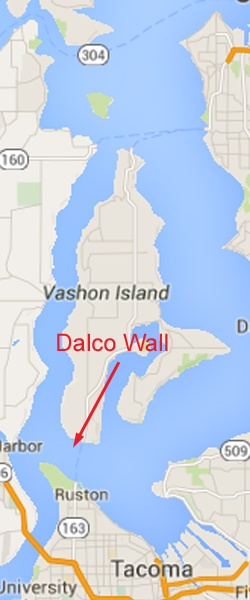
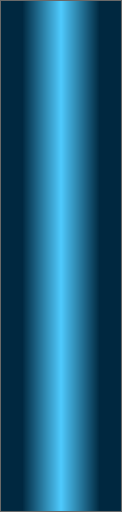
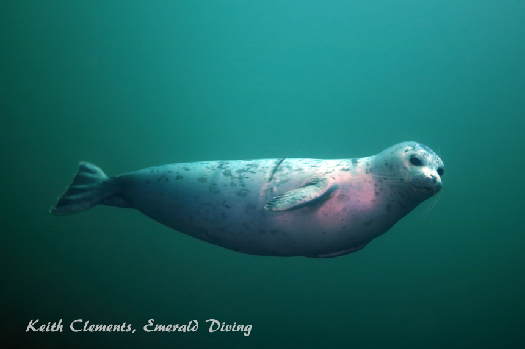
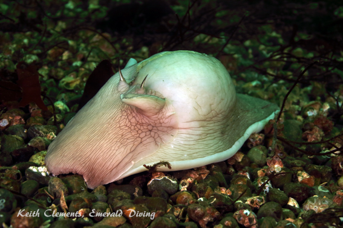
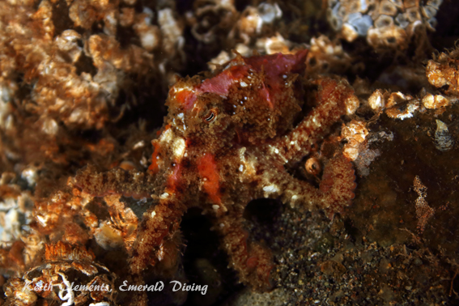
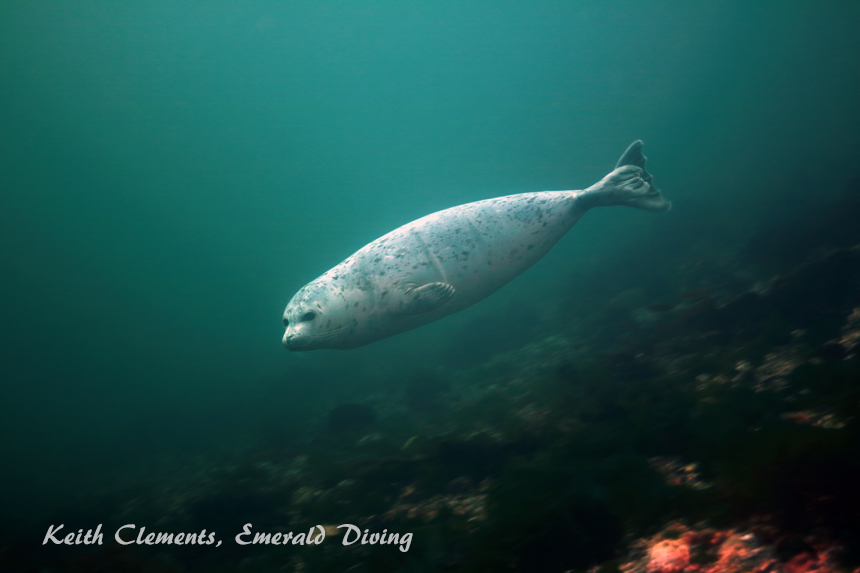

Dalco Wall
Topography: Large sandstone and cobblestone wall starting in 50 feet of water and dropping over 150 feet. The sloping shelf above the wall consists of sand and cobblestone with a few large boulders scattered about.
Puget Sound marine life rating: 3
Puget Sound structure rating: 4
Diving depths: 70-110 feet
Highlight: Massive wall with sections of sculpted sandstone. Occasional sightings of both wolf-eels and giant pacific octopus.
Skill level: Advanced
GPS coordinates: N47° 19.920’ W122° 31.111’
Access by boat: Dalco Wall is situated in south-central Puget Sound along the southern-most shore of Vashon Island. The Vashon/Rustin ferry dock lies just to the west. I find this expansive wall by locating the first house west of the ferry landing. A large concrete bulkhead lies west of the house. A depth sounder reveals a sheer wall starting in about 50 feet of water between the bulkhead and house.
Shore access: None
Dive profile: This massive wall runs parallel to the shoreline. I anchor on the shelf above the wall in about 25 feet of water. I descend, check the bite of the anchor, and swim south until the substrate disappears beneath me. I like to work east for the first part of the dive against the flooding current so I can ride the current back to the boat.
The base of the wall becomes shallower to the east before giving way to a steep substrate. I have no idea how far west the wall extends, but parts of the wall drop to depths of over 200 feet. Most of the wall consists of a sandstone and cobblestone mix. Current has carved some indentations, ledges, and holes along this otherwise flat wall. Many of the holes make ideal lairs for marine creatures.
Vast expanses of the wall are composed only of sandstone. Current from the Tacoma Narrows has sculpted amazing vertical channels into these sandstone sections. Ebbing tides blasts huge volumes of water through the Tacoma Narrows and across Dalco Passage. These waters hit Dalco Wall and carve the soft sandstone as they waterfall. The carvings look like exaggerated ripples on a sandy beach turned vertical. Nature is truly a fabulous artist.
Visibility tends to be a bit better at Dalco Wall than at other sites in the immediate area. Sediments from the Tacoma Narrows have a few miles to settle out before reaching the wall. I have had several magnificent dives on this wall with visibility in excess of 50 feet.
My preferred gas mix: EAN 32
Current observations:
Current Station: Tacoma Narrows (north end)
Noted Slack Before Flood Correction: None
The current at this site is deadly serious. Torrid ebbing current from the Tacoma Narrows deflects off Dalco Wall. This creates a very strong waterfall effect that can quickly drag a diver down with deadly results.
This dive can reportedly be done any time during a flooding current, provided is live boat is available. A flooding current flows west over this site and is much more intense on the shelf than on the wall.
I prefer to dive Dalco Wall at slack before flood on minor exchanges (2.0 knots max or less on either side of the exchange) to minimize risks associated with current. The key is not to get in the water too early while the current is still ebbing.
Boat Launch:
Point Defiance Boat Ramp (Ruston, Tacoma). Approximately 2 miles from the dive site.
Facilities: None
Hazards:
Current: Strong waterfall current during ebbing tides. Substantial current off-slack on the shelf.
Depth: This sheer wall drops well beyond recreational diving limits. Good buoyancy and depth management skills are essential.
Fishing boats: Salmon fishermen work this area heavily during salmon season.
Marine life: This is not a dive site I visit when I want to see huge schools of rockfish, massive lingcod, and colorful invertebrates. Although some divers refer to this wall as barren, an observant dive will note a multitude of well hidden and smaller creatures.
I occasionally find wolf eels and giant pacific octopus hiding in sizable holes deep on the eastern reaches of the wall - usually near the top. Small rockfish and greenlings are readily found anywhere the structure offers adequate protection from the current. Both red Irish lords and buffalo sculpins cling to the wall using their large pectoral fins for leverage. The shelf above the wall is an excellent place to search for marine life. I have seen dogfish patrolling this area and octopus hunting in the open on the shelf. The large boulders serve as havens for groves of smaller marine life, including various snails, crabs, urchins, and shrimps.
Puget Sound marine life rating: 3
Puget Sound structure rating: 4
Diving depths: 70-110 feet
Highlight: Massive wall with sections of sculpted sandstone. Occasional sightings of both wolf-eels and giant pacific octopus.
Skill level: Advanced
GPS coordinates: N47° 19.920’ W122° 31.111’
Access by boat: Dalco Wall is situated in south-central Puget Sound along the southern-most shore of Vashon Island. The Vashon/Rustin ferry dock lies just to the west. I find this expansive wall by locating the first house west of the ferry landing. A large concrete bulkhead lies west of the house. A depth sounder reveals a sheer wall starting in about 50 feet of water between the bulkhead and house.
Shore access: None
Dive profile: This massive wall runs parallel to the shoreline. I anchor on the shelf above the wall in about 25 feet of water. I descend, check the bite of the anchor, and swim south until the substrate disappears beneath me. I like to work east for the first part of the dive against the flooding current so I can ride the current back to the boat.
The base of the wall becomes shallower to the east before giving way to a steep substrate. I have no idea how far west the wall extends, but parts of the wall drop to depths of over 200 feet. Most of the wall consists of a sandstone and cobblestone mix. Current has carved some indentations, ledges, and holes along this otherwise flat wall. Many of the holes make ideal lairs for marine creatures.
Vast expanses of the wall are composed only of sandstone. Current from the Tacoma Narrows has sculpted amazing vertical channels into these sandstone sections. Ebbing tides blasts huge volumes of water through the Tacoma Narrows and across Dalco Passage. These waters hit Dalco Wall and carve the soft sandstone as they waterfall. The carvings look like exaggerated ripples on a sandy beach turned vertical. Nature is truly a fabulous artist.
Visibility tends to be a bit better at Dalco Wall than at other sites in the immediate area. Sediments from the Tacoma Narrows have a few miles to settle out before reaching the wall. I have had several magnificent dives on this wall with visibility in excess of 50 feet.
My preferred gas mix: EAN 32
Current observations:
Current Station: Tacoma Narrows (north end)
Noted Slack Before Flood Correction: None
The current at this site is deadly serious. Torrid ebbing current from the Tacoma Narrows deflects off Dalco Wall. This creates a very strong waterfall effect that can quickly drag a diver down with deadly results.
This dive can reportedly be done any time during a flooding current, provided is live boat is available. A flooding current flows west over this site and is much more intense on the shelf than on the wall.
I prefer to dive Dalco Wall at slack before flood on minor exchanges (2.0 knots max or less on either side of the exchange) to minimize risks associated with current. The key is not to get in the water too early while the current is still ebbing.
Boat Launch:
Point Defiance Boat Ramp (Ruston, Tacoma). Approximately 2 miles from the dive site.
Facilities: None
Hazards:
Current: Strong waterfall current during ebbing tides. Substantial current off-slack on the shelf.
Depth: This sheer wall drops well beyond recreational diving limits. Good buoyancy and depth management skills are essential.
Fishing boats: Salmon fishermen work this area heavily during salmon season.
Marine life: This is not a dive site I visit when I want to see huge schools of rockfish, massive lingcod, and colorful invertebrates. Although some divers refer to this wall as barren, an observant dive will note a multitude of well hidden and smaller creatures.
I occasionally find wolf eels and giant pacific octopus hiding in sizable holes deep on the eastern reaches of the wall - usually near the top. Small rockfish and greenlings are readily found anywhere the structure offers adequate protection from the current. Both red Irish lords and buffalo sculpins cling to the wall using their large pectoral fins for leverage. The shelf above the wall is an excellent place to search for marine life. I have seen dogfish patrolling this area and octopus hunting in the open on the shelf. The large boulders serve as havens for groves of smaller marine life, including various snails, crabs, urchins, and shrimps.



Underwater imagery from this site





Lewis's Moonsnail
Harbor Seal
Harbor Seal
Red Octopus
Heart Cockle
Wolf Eel

Composite Photography From Dalco Wall